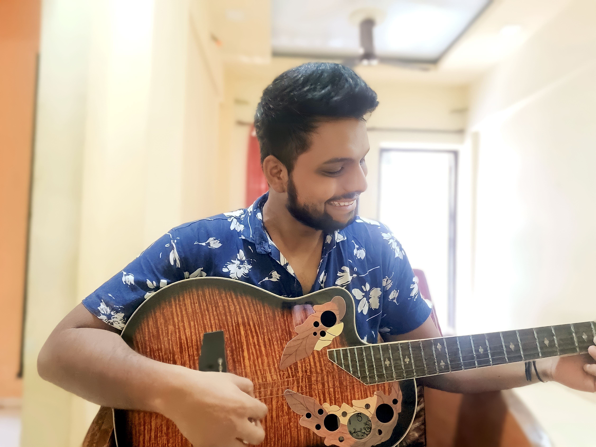

About Me:
I am a driven and curious individual with a passion for continuous learning and growth.
Education:
Bachelor of computer Applications
Google Proffesional Project Management Certificate
Google IT Support Proffesional Certificate
Work Experience:
Project Manager- Magenta Communications Pvt Ltd.
Poject planning for multi-lievel projects
Managing Resources
Interacting with stakeholders(internal &external)
Adhering to timeline
Supporting the inhouse team
Making coffee & participating in office banter
Assistant Manager- UTI Asset Managent Ltd.
Engage with Mutual Fund Distributors to communicate with the updates ni our products/ product basket.
Maintain a healthy relationship with them.
Budget, Schedule and Manage the various events.
Attend the investors who wish ot invest directly in our funds.
Help them achieve their financial goals by providing them solutions./li>
Supervise the working of back-office team.
Tech Skills:
Programming Languages: Python,HTML
Project Management
IT Support
Presentation Deck
Soft Skills:
Problem-Solving
Team work
Accountability
Adaptibility & Flexibility
Feel Free to connect with me via LinkedIn
This is a Capstone Project for my Course. Let me know your thoughts on it.